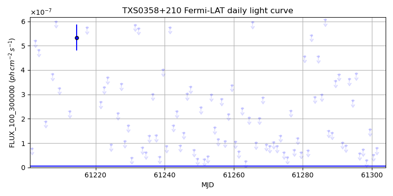
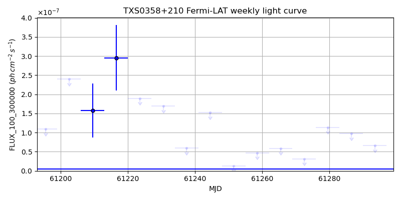
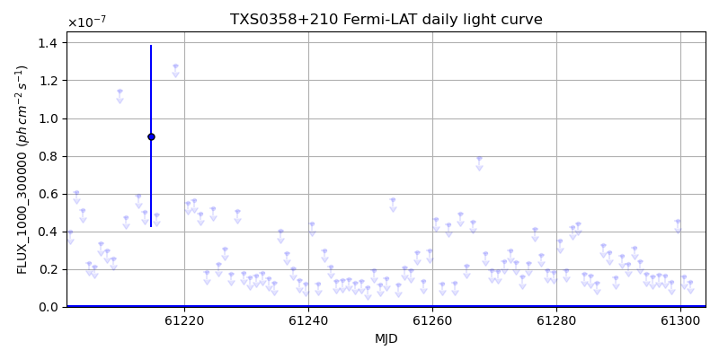
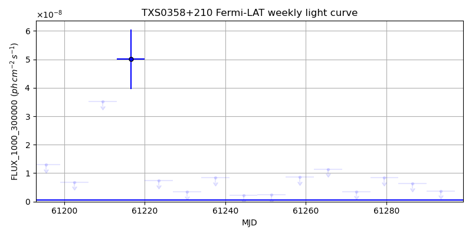

LAT Lightcurve site: https://fermi.gsfc.nasa.gov/ssc/data/access/lat/msl_lc/source/TXS_0358p210
NED: Query
Time of last update of this page: UT: 2026-09-19 15:14 (MJD: 61302.635)
| Property | Value |
|---|---|
| R.A. | 4:01:45.12 |
| Dec. | 21:10:30.0 |
| z | 0.834 |
| 3FGL SpectrumType | PowerLaw |
| 3FGL PL Index | 2.35 |
| 3FGL Flux_100_300000 | 1.12e-08 1 / (s cm2) |
| 3FGL Flux_1000_300000 | 4.97e-10 1 / (s cm2) |
| 3FGL Flux >200 GeV | 3.85e-13 1 / (s cm2) |
| 3FGL Extrap. Crab >200 GeV | 0.00 |
| 3FGL Flux After EBL Absorption >200GeV | 1.24e-14 1 / (s cm2) |
| 3FGL EBL Crab Fraction >200GeV | 0.00 |

| MJD | dMJD | Flux | dFlux | Frac3FGL | FracCrab>200GeV | EBLFracCrab>200GeV |
|---|---|---|---|---|---|---|
| 61297.50 | 0.50 | 7.34e-08 | 0.00e+00 | 0.00 | 0.00 | 0.00 |
| 61298.50 | 0.50 | 2.94e-08 | 0.00e+00 | 0.00 | 0.00 | 0.00 |
| 61299.50 | 0.50 | 1.56e-07 | 0.00e+00 | 0.00 | 0.00 | 0.00 |
| 61300.50 | 0.50 | 5.27e-08 | 0.00e+00 | 0.00 | 0.00 | 0.00 |
| 61301.50 | 0.50 | 7.95e-08 | 0.00e+00 | 0.00 | 0.00 | 0.00 |

| MJD | dMJD | Flux | dFlux | Frac3FGL | FracCrab>200GeV | EBLFracCrab>200GeV |
|---|---|---|---|---|---|---|
| 61265.50 | 3.50 | 5.89e-08 | 0.00e+00 | 0.00 | 0.00 | 0.00 |
| 61272.50 | 3.50 | 3.13e-08 | 0.00e+00 | 0.00 | 0.00 | 0.00 |
| 61279.50 | 3.50 | 1.14e-07 | 0.00e+00 | 0.00 | 0.00 | 0.00 |
| 61286.50 | 3.50 | 9.78e-08 | 0.00e+00 | 0.00 | 0.00 | 0.00 |
| 61293.50 | 3.50 | 6.57e-08 | 0.00e+00 | 0.00 | 0.00 | 0.00 |

| MJD | dMJD | Flux | dFlux | Frac3FGL | FracCrab>200GeV | EBLFracCrab>200GeV |
|---|---|---|---|---|---|---|
| 61297.50 | 0.50 | 1.64e-08 | 0.00e+00 | 0.00 | 0.00 | 0.00 |
| 61298.50 | 0.50 | 1.30e-08 | 0.00e+00 | 0.00 | 0.00 | 0.00 |
| 61299.50 | 0.50 | 4.55e-08 | 0.00e+00 | 0.00 | 0.00 | 0.00 |
| 61300.50 | 0.50 | 1.59e-08 | 0.00e+00 | 0.00 | 0.00 | 0.00 |
| 61301.50 | 0.50 | 1.34e-08 | 0.00e+00 | 0.00 | 0.00 | 0.00 |

| MJD | dMJD | Flux | dFlux | Frac3FGL | FracCrab>200GeV | EBLFracCrab>200GeV |
|---|---|---|---|---|---|---|
| 61265.50 | 3.50 | 1.14e-08 | 0.00e+00 | 0.00 | 0.00 | 0.00 |
| 61272.50 | 3.50 | 3.56e-09 | 0.00e+00 | 0.00 | 0.00 | 0.00 |
| 61279.50 | 3.50 | 8.34e-09 | 0.00e+00 | 0.00 | 0.00 | 0.00 |
| 61286.50 | 3.50 | 6.32e-09 | 0.00e+00 | 0.00 | 0.00 | 0.00 |
| 61293.50 | 3.50 | 3.73e-09 | 0.00e+00 | 0.00 | 0.00 | 0.00 |
--------------------------------------------------------- Using user-supplied coords: 4:01:45.12 21:10:30.0 2000 --------------------------------------------------------- FLWO UT night of: 2026-09-20 Local Sid. @ Midnight: 23:32 Sunset (-15.0) (local, UT): 19:31 02:31 Sunrise (-15.0) (local, UT): 05:04 12:04 Moonrise (local, UT): Moonset (local, UT): 00:13 07:13 Moon phase: 0.64 --------------------------------------------------------- AzTime LSID UT Obj_el Obj_az Mn_el Mn_az Sep. --------------------------------------------------------- 19:31 19:03 02:31 -21.7 45.2 30.5 184.0 142.2 20:01 19:33 03:01 -17.0 50.7 29.7 191.5 142.1 20:31 20:03 03:31 -11.9 55.6 28.1 198.7 141.9 21:01 20:33 04:01 -6.3 60.1 25.8 205.5 141.8 21:31 21:03 04:31 -0.2 64.2 22.9 211.9 141.6 22:01 21:33 05:01 5.2 68.1 19.4 217.8 141.5 22:31 22:03 05:31 11.2 71.7 15.4 223.2 141.3 23:01 22:33 06:01 17.3 75.2 11.0 228.1 141.1 23:31 23:04 06:31 23.5 78.7 6.3 232.6 140.9 00:01 23:34 07:01 29.8 82.1 1.5 236.7 140.7 00:31 00:04 07:31 36.1 85.6 -2.6 240.5 140.5 01:01 00:34 08:01 42.5 89.3 -9.5 244.1 140.3 01:31 01:04 08:31 48.9 93.4 -15.1 247.4 140.0 02:01 01:34 09:01 55.3 98.2 -20.8 250.6 139.8 02:31 02:04 09:31 61.6 104.2 -26.6 253.6 139.5 03:01 02:34 10:01 67.6 112.3 -32.5 256.6 139.2 03:31 03:04 10:31 73.3 125.0 -38.4 259.6 138.9 04:01 03:34 11:01 77.8 146.8 -44.5 262.6 138.6 04:31 04:04 11:31 79.6 181.9 -50.5 265.8 138.3 05:01 04:34 12:01 77.4 216.0 -56.6 269.4 138.0 05:04 04:37 12:04 77.1 218.4 -57.1 269.7 138.0 --------------------------------------------------------- Dark hours >55 deg.: 3.07 srcstart (UT): 2026-09-20 08:59 srcend (UT): 2026-09-20 12:03